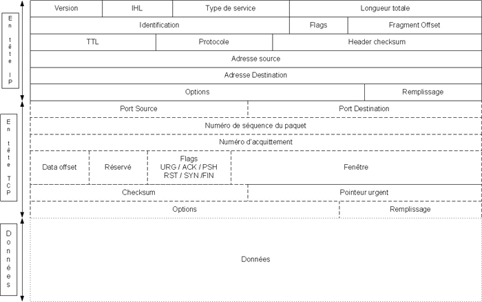

IPtables HOWTO français
Préconisations, Installation, configuration.
Par Philippe Humeau (philippe.humeau@nbs-system.com) le 18/03/2005
- Introduction sur les Firewalls
- Les paquets TCP/IP, leur vie, leur format
- NetFitler / Iptables
- Configurer son noyau pour Netfilter
- Cheminement des paquets dans le filtre
- Les chaînes INPUT et OUTPUT
- La chaîne FORWARD
- Le DNAT / SNAT
- Un exemple de SNAT/DNAT couplés
- Quelques commandes indispensables
- La syntaxe d’iptables
- Quelques cas classiques
- Un script de Firewalling iptables pour une machine personnelle sur ADSL
1. Introduction sur les Firewalls
Les firewalls servent à filtrer les paquets. Jusqu’ici, si vous êtes entrain de lire cette page, j’ai bien conscience de ne rien vous apprendre. Mais certains principes de base méritent toujours d’être rappelés :
Un firewall doit être imprenable car sinon votre réseau entier est compromis.
Un firewall efficace doit posséder plusieurs interfaces réseau pour pouvoir faire un filtrage entre plusieurs zones. L’idéal c’est qu’à chaque zone du SI (Système d’Information) corresponde une interface. Par exemple, une pour la connexion internet, une pour la DMZ (Démilitarized Zone, zone des serveurs visible depuis Internet, possédant une IP Publique), et une pour le LAN. De cette façon vous pourrez filtrer plus finement les connexions entrantes et sortantes du SI.
Plus la granularité est fine, meilleure sera la sécurité informatique .
Dernière règle souvent oubliée : La première chose à faire dans un Firewall c’est de tout refuser et ensuite de n’accepter que les flux nécessaires… Tout autre approche de la configuration d’un firewall d’un point de vue sécurité est folklorique voire inutile.
2. Les paquets TCP/IP, leur vie, leur format
Voici le format d’un paquet : (d’après la RFC 791)

Il est composé d’une en tête IP puis éventuellement (si c’est un paquet TCP, si le champ protocole est à 6), d’une en tête TCP. On y retrouve les champs qui vont nous permettre de filtrer les paquets ultérieurement avec Netfilter. Notamment : adresse source, adresse destination et si c’est un paquet TCP, port source, port destination (en UDP aussi), numéro de séquence, les flags, la fenêtre, le checksum et les options. Il serait un peu long de faire un cours sur tous ces champs et ce n’est pas le but de ce Howto, mais nous reviendrons sur certains d’entre eux plus tard dans le document.
- Un petit rappel sur le modèle OSI n’est pas forcément inutile non plus pour avoir toute les base et bien savoir de quoi on parle.
- Le modèle OSI comporte 7 couches :
- La couche 1 est le support physique, celui qui transmet, le câble, les ondes etc…
- La couche 2 est la liaison de données, celle qui module ou encode la donnée pour qu’elle puisse être transportée par la couche 1.
- La couche 3 est la couche réseau, celle qui adresse les données.
- La couche 4 est la couche de transport, celle qui s’occupe de l’acheminement.
- La couche 5 est la couche de session, celle qui établie les dialogues.
- La couche 6 est la couche de présentation, elle s’occupe de l’abstraction pour que tout le monde comprenne la communication peut importe le matériel ou le logiciel.
- La couche 7 est la couche applicative, les protocoles de communication, web, mail, ftp, etc…
- Nous allons essentiellement nous intéresser aux couches 3, 4 et 5 dans ce Howto
3. NetFilter / Iptables
Netfilter est l’implémentation noyau du firewall sous Linux. Un certain codeur talentueux du nom de Rusty Russel a estimé qu’il était nécessaire d’avoir un remplaçant au fameux ipfilter et de pouvoir rivaliser voir dépasser largement les firewalls commerciaux.
Actuellement, d’après mes connaissances, Netfilter est l’un des firewall des plus puissants du marché. Il est souple, simple à configurer et très largement supporté par la communauté.
Iptables est la commande permettant de paramétrer le filtre Netfilter du noyau et donc de configurer son firewall.
4. Configurer son noyau pour Netfilter
Pour pouvoir utiliser les fonctionnalités Netfilter du noyau Linux, il faut activer les options suivantes lors de la configuration du noyau :
J’utilise le kernel 2.6.10, notamment pour sa robustesse avec le patch GRsec 2.1.0 qui est disponible pour cette version du kernel au moment de l’écriture de ce Howto.
Pour de multiples raisons trop longues à décrire ici, le patch GRsec est incontournable en terme de sécurité Linux, je vous conseille donc de le mettre en place, même si ce n’est pas du tout indispensable pour l’utilisation de Netfilter
Si vous voulez Grsec récupérez le sur http://www.grsecurity.net/:
http://www.grsecurity.net/grsecurity-2.1.0-2.6.10-200501081640.patch (pour le 2.1.0 pour le kernel 2.6.10)
Le kernel est disponible sur : ftp.kernel.org
ftp://ftp.kernel.org/pub/linux/kernel/v2.6/linux-2.6.10.tar.gz (pour le kernel 2.6.10)
Ensuite, déplacer les fichers grsecurity-2.1.0-2.6.10-200501081640.patch et linux-2.6.10.tar.gz archives dans /usr/src puis tapez :
patch -p0 < grsecurity-2.1.0-2.6.10-200501081640.patch
Vous devriez maintenant avoir une arborescence des sources du kernel patchées avec GRsec.
Ensuite :
Configurez votre kernel selon les besoins de votre machine et mettez les options suivantes :
Activez les options suivantes :
Toutes les options et sous options, pas de soucis, même si globalement iptables support / NAT / MASQUERADE / IP range match support / Limit match support / connection state / Reject / NAT of local connexion / Log.
Security Options
-> GRsecurity
-> Adress Space Protection
-> Deter Exploit brutforcing
-> FileSystem protection
-> Chroot jail restriction (tout)
-> executable protection
-> randomized PID
-> Network protection
-> (larger entropy pool, truly random tcp isn, random IP ids)
-> sysctl support
-> sysctl support
-> PaX
-> PaX control
-> Use ELF program header Marking
-> Non executable pages
-> enforce non-executable pages
-> segmentation based non-exec pages
-> enforce non-executable kernel pages
-> address space layout randomization
-> Randomize kernel stack base
Et ce qui vous semblera pertinent selon votre configuration.
Enfin :
ou si vous ne désirez pas utiliser l’installeur standard:
et modifiez ou relancez votre bootloader.
5. Cheminement des paquets dans le filtre
Les paquets qui rentrent ou sortent du firewall sont soumis à un examen très précis par le noyau.
Il est indispensable de bien comprendre le cheminement des paquets à travers les chaînes si l’on ne veut pas se ruiner en achat de tubes d’aspirine par la suite :

Quand un nouveau paquet arrive, il est d’abord inspecté pour savoir sa source et sa destination. Le firewall confronte ces informations avec ses propres règles et détermine s’il s’agit d’un paquet « en transit », c’est à dire qui ne fait que passer d’une de ses interfaces à une autre, ou s’il lui est adressé.
Si le paquet lui est adressé il est confronté au filtre INPUT sinon il passera dans le filtre FORWARD de toute façon (même en cas de NAT, voir plus bas).
Si le paquet sort du firewall c’est la chaîne OUTPUT qui est concernée.
6. Les chaînes INPUT et OUTPUT
Les chaînes Input et Output sont simplissimes. Il s’agit tout simplement des connexions à destination et depuis le firewall à lui-même. Ces connexions peuvent arriver et sortir par différentes cartes réseau, mais c’est le firewall lui-même qui est concerné par ces filtres.
Un exemple tout simple pour illustrer le propos :
Cette ligne autorise les connexions sur le port 80 de la machine concernée. (Serveur Web)
Cette ligne autorise les connexions vers des serveurs sur le port 80 en tcp (le Websurf).
Petite note : Même pour un serveur linux qui n’est pas spécialisé en firewall, il peut être intéressant d’utiliser iptables pour faire un filtrage. Par exemple pour n’autoriser que certaines machines à se connecter en Web, FTP ou en SSH.
7. La chaîne FORWARD
La chaîne FORWARD est de loin la plus intéressante. Elle est faite pour filtrer le trafic transitant entre deux interfaces réseau. Par exemple si un paquet est reçu par la carte de connexion à Internet et qu’il doit aller vers un serveur de mail par la carte « DMZ », alors ce paquet transit dans la chaîne FORWARD.
Exemple par IP :
Ou par interface :
Il est bien sur possible de multiplier les paramètres pour plus de précision (et donc de sécurité), par exemple :
8. Le DNAT / SNAT
Le SNAT (Source Network Adresse Translation) et le DNAT (Destination Network Adresse Translation) sont deux techniques très utiles permettant de substituer le firewall à la machine émettant ou recevant une requête. Illustrons cela par un schéma pour plus de clarté (l’exemple est fait sur le DNAT, mais le SNAT fait exactement la même chose à l’envers) :

Bon, ça à l’air compliqué mais rassurez vous, ça ne l’est pas.
Voici ce qui se passe step by step :
Une machine envoie une requête à destination de votre firewall, mais vous ne souhaitez pas que ce soit le firewall qui s’occupe de cette connexion mais plutôt une machine de votre LAN (par exemple pour une prise de commande à distance comme VNC ou TSE).
Rien de plus simple. Prenons l’exemple de VNC :
Le Firewall, avec une règle spécifique au DNAT va s’en charger.
Il ne vous reste plus qu’à contacter votre firewall sur le port 5900 et le paquet est directement rerouté vers la machine du LAN dont vous voulez prendre le contrôle. Enfin pour que ca marche, il vous faut quand même une rêgle qui va bien dans le filtre FORWARD :
Et voila le tour est joué. Comme il s’agit de prendre le contrôle à distance d’une machine du LAN, la prudence extrême s’impose, d’oû le –s 14.15.16.21 qui limite à cette IP et à elle seule la possibilité de prendre le contrôle à distance en VNC de la machine. (Pour plus de sécurité on pensera à crypter le tuyau VNC avec un stunnel entre les deux firewall, mais ce n’est pas le débat du jour)
Le cheminement du paquet est le suivant :
La machine source émet le paquet.
Le firewall change le champ IP de destination du paquet et met celle de la machine du LAN à la place et change aussi l’IP source par la sienne. Il garde une trace de cette substitution dans une table. (Ensuite si une règle Forward l’autorise, il transmet le paquet à la machine du LAN)
Il envoi le paquet à la machine du LAN et quand celle-ci lui répond, il remet l’IP de destination de la machine source et la sienne en IP source.
Vous ne voulez pas utiliser le port habituel de VNC pour cacher un peu tout ça ?
iptables –I FORWARD –p tcp –i eth0 –s 14.15.16.21 –d 192.168.0.2 –dport 5900 –j ACCEPT
Vous en voulez plusieurs des machines en VNC ? Pas de soucis :
iptables –I FORWARD –p tcp –i eth0 –s 14.15.16.21 –d 192.168.0.2 –dport 5900 –j ACCEPT
iptables –I PREROUTING –t nat –p tcp –i eth0 –s 14.15.16.21 –dport 2324 –j DNAT –to 192.168.0.3:5900
iptables –I FORWARD –p tcp –i eth0 –s 14.15.16.21 –d 192.168.0.3 –dport 5900 –j ACCEPT
iptables –I PREROUTING –t nat –p tcp –i eth0 –s 14.15.16.21 –dport 2325 –j DNAT –to 192.168.0.4:5900
iptables –I FORWARD –p tcp –i eth0 –s 14.15.16.21 –d 192.168.0.4 –dport 5900 –j ACCEPT
iptables –I PREROUTING –t nat –p tcp –i eth0 –s 14.15.16.21 –dport 2326 –j DNAT –to 192.168.0.5:5900
iptables –I FORWARD –p tcp –i eth0 –s 14.15.16.21 –d 192.168.0.5 –dport 5900 –j ACCEPT
Et voila, en appelant sur 2323 vous tombez sur 192.168.0.2, sur 2324 c’est 192.168.0.3 etc…
9. Un exemple de SNAT/DNAT couplés :
Ou, comment faire une DMZ sans mettre d’IP publics directement aux machines…
Admettons que nous ayons un serveur de mail avec en théorie comme IP 12.13.14.15 et un firewall en 12.13.14.254.
On va mettre à notre serveur Mail un IP privée, par exemple 192.168.0.15 et sur la carte DMZ du firewall on va mettre 192.168.0.254. Ensuite avec un SNAT et un DNAT, le tour est joué :
(eth0 = Wan, eth1=Lan dans l’exemple)
iptables –t nat –I POSTROUTING –o eth0 –s 192.168.0.15 –p tcp –sport 25 –j SNAT –to 12.13.14.15
Notre serveur de mail répond bien sur le port 25 à l’adresse 12.13.14.15, mais en fait il a une adresse IP privé en 192.168.0.15 (si si, ca peut très être utile en sécurité).
10. Quelques commandes indispensables
Bon évidemment, iptables mais on y reviendra.
Cette commande sauve l’état actuel de votre Netfilter dans un fichier.
(iptables-save > firewall.rules)
Cette commande restaure le contenu de votre firewall à partir d’un fichier
(iptables-restore < firewall.rules)
tcptrack et tcpdump sont des amis précieux pour voir l’état de vos connexions et du trafic et potentiellement pour débugger votre firewall. (apt-get install tcptrack tcpdump sur debian)
11. La syntaxe d’iptables
Iptable est beaucoup plus complet que ce je vais présenter ici. Sa syntaxe est aussi plus complète, mais le but de ce howto est de pouvoir faire son firewall, pas de connaître par cœur toutes les options, mêmes les moins usités.
-I = insert rule, on ajoute un règle en tête du filtre.
-A = append rule, on ajoute une règle à la fin du filtre.
-D = delete, on efface une règle.
-R = replace, on remplace un règle.
-L = list, on liste un chaîne.
-F = flush, on efface les règle d’une chaîne.
-P = Policy, réaction par défaut.
Il en existe d’autres mais dans l’immédiat ces actions nous suffirons.
Ensuite on a la chaîne concernée. INPUT / FORWARD / OUTPUT, mais il est possible d’en créer.
Les éléments de syntaxe suivants servent à préciser les règles :
- -s ip source
- -d ip cible
- -p type de protocol (tcp/udp/…)
- -dport port de destination
- -sport port source
- -m type de match (par exemple state)
- –state (NEW, ESTABLISHED, RELATED)
Ce sont les états des connexions, NEW nouvelle connexion, ESTABLISHED, connexion déjà établie, RELATED, connexion qui a un lien avec une autre (par exemple le port 20 (data) du FTP est related à une connexion sur le port 21)
- -t nom de la table concernée par l’action
- -i interface (carte réseau) d’entrée
- -o interface (carte réseau) de sortie
- -n sans résolution de nom
- -v verbose, iptables raconte sa vie avec plus de détails
Ensuite viennent les actions à mener en fonction des détails de la règle :
LOG / DROP / ACCEPT. Il en existe bien d’autre, mais je ne les détaillerai pas ici.
MASQUERADE cependant est importante car elle permet de faire du masquerading du réseau local, pour faire court, c’est ce dont vous avez besoin pour permettre au LAN de surfer. (c’est du NAT aussi)
Quelques exemples de syntaxe :
Liste les règles concernant des SNAT/DNAT
Liste les autres règles sans la résolution des noms
Dégage tous les paquets provenant de 12.13.14.15 à destination du firewall
Autorise le firewall à se connecter en port 80 sur 12.13.14.15 uniquement.
Vide les règles du filtre INPUT
Règle la police par défaut à drop sur le filtre INPUT
Dans tous les cas, il faut régler la policy par défaut à DROP sur tous les filtres et ensuite accepter seulement les flux « licites » :
iptables -P OUTPUT DROP
iptables -P FORWARD DROP
De cette façon, si vous avez oublié une règle, dans le pire cas le paquet sera dropé, mais il n’atteindra pas sa destination. En gros tout ce qui n’est pas explicitement autorisé est interdit.
12. Quelques cas classiques
Je souhaite pouvoir héberger un dns/mail/http/ftp sur ma machine qui fait aussi firewall :
DNS : iptable –i INPUT –p udp –dport 53 –j ACCEPT
(ajouter le tcp si vous faite du transfert de zone)
ftp : iptable –i INPUT –p TCP –dport 21 –m state –state NEW –j ACCEPT
iptable –i INPUT –p TCP –dport 20 –m state –state RELATED –j ACCEPT
Je souhaite pouvoir héberger un dns/mail/http/ftp sur une machine dédié autre que le firewall :
iptables –t nat –I POSTROUTING –s [ip privé serveur mail] –p tcp –sport 25 –j SNAT –to [ip firewall]
Je ne suis pas pour ou contre le peer to peer (P2P), mais j’en ai marre qu’on me pose la question, donc pour Emule / Edonkey / Bittorrent et autre :
iptable et emule ou edonkey / overnet :
iptables –t nat –I PREROUTING –d [ip firewall] –p tcp –dport 4881 –j DNAT –to [ip machine LAN]
iptables –t nat –I PREROUTING –d [ip firewall] –p tcp –dport 4242 –j DNAT –to [ip machine LAN]
iptables –t nat –I PREROUTING –d [ip firewall] –p tcp –dport 4662 –j DNAT –to [ip machine LAN]
iptables –t nat –I PREROUTING –d [ip firewall] –p udp –dport 4665 –j DNAT –to [ip machine LAN]
iptables –t nat –I PREROUTING –d [ip firewall] –p udp –dport 4672 –j DNAT –to [ip machine LAN]
iptables – I FORWARD –s [ip firewall] –d [ip machine LAN] –p tcp –dport 4661 –j ACCEPT
iptables – I FORWARD –s [ip firewall] –d [ip machine LAN] –p tcp –dport 4881 –j ACCEPT
iptables – I FORWARD –s [ip firewall] –d [ip machine LAN] –p tcp –dport 4242 –j ACCEPT
iptables – I FORWARD –s [ip firewall] –d [ip machine LAN] –p tcp –dport 4662 –j ACCEPT
iptables – I FORWARD –s [ip firewall] –d [ip machine LAN] –p udp –dport 4665 –j ACCEPT
iptables – I FORWARD –s [ip firewall] –d [ip machine LAN] –p udp –dport 4672 –j ACCEPT
iptable et Bittorrent :
iptables – I FORWARD –d [ip firewall] –p tcp –dport 6881:6999 –j DNAT –to [ip privé serveur mail]
De façon général, dans /etc/services, vous avez la plupart des ports de décrits.
Je veux le firewall le plus simple possible pour que mon LAN puisse surfer en toute sécurité :
iptables -P OUTPUT DROP
iptables -P FORWARD DROP
iptables -F INPUT
iptables -F OUTPUT
iptables -F FORWARD
iptables -I FORWARD –i eth1 –o eth0 -m state –state NEW,ESTABLISHED,RELATED -j ACCEPT
iptables -t nat -A POSTROUTING -o eth0 -j MASQUERADE
echo 1 > /proc/sys/net/ipv4/ip_forward
(si eth0 est la connexion au net, sinon mettre eth1 ou ppp0 en fonction)
13. Un script de Firewalling iptables pour une machine personnelle sur ADSL
(à stocker dans /etc/init.d/firewall)
case « $1″ in start)
date=`date +’%b %d %k:%M:%S’`;
echo » «
echo -e « ———–> \033[40m\033[1;32mADSL Firewalling Script V1.9\033[0m <--------------"
echo -e "---------> \033[40m\033[1;32mLast Updated on 02/01/2005\033[0m <----------"
echo -e "---------> \033[40m\033[1;33mStarting on $date \033[0m <----------"
echo "-> <-"
echo -e "-> \033[40m\033[1;34mSetting UP variables \033[0m <-"
Titre affiché à l’écran
Correspond à un patch spécifique pour jouer avec des jeux communicants en UDP
FIREWALL_LOG=/var/log/firewall
LOOSE_UDP_PATCH=1
LAN_BCAST_ADDRESS= »192.168.0.255/32″
INET_IFACE= »eth0″
LAN_IFACE= »eth1″
IPTABLES= »/sbin/iptables »
if [ "$FIREWALL_LOG" == "" ]; then FIREWALL_LOG= »/dev/null »; fi
echo « $date — Starting Firewall – » >> $FIREWALL_LOG
KERNELMAJ=`uname -r | sed -e ‘s,\..*,,’`
KERNELMIN=`uname -r | sed -e ‘s,[^\.]*\.,,’ -e ‘s,\..*,,’`
if [ "$KERNELMAJ" -lt 2 ] || [ "$KERNELMAJ" -eq 2 -a "$KERNELMIN" -lt 3 ]; then
echo -e « \033[40m\033[1;31mWARNING: Your kernel version is older than 2.4!\033[0m"
echo -e "\033[40m\033[1;31mYour kernel probably doesn't support IPTABLES unless an IPTABLES patch is compiled in it.\033[0m"
fi
On récupère la version du noyau et si il n’est pas au moins en 2.4, un warning est généré.
BANNED_IP="12.13.14.15/24 15.16.17.18/28 19.20.21.22"
Certaines IP (centrales de publicité, machines de pirates ou piratées, organismes indésirables et autres…) sont à rentrer dans cette variable. Si vous ne souhaitez pas avoir de communication IP avec par exemple atdoubleclick.net, rentrez leur IP dans cette variable et toute communication entrante ou sortante sera bloquée.
RESERVED_NET="0.0.0.0/8 1.0.0.0/8 2.0.0.0/8 3.0.0.0/8 4.0.0.0/8 5.0.0.0/8 7.0.0.0/8 10.0.0.0/8 14.0.0.0/8
23.0.0.0/8 27.0.0.0/8 31.0.0.0/8 36.0.0.0/8 37.0.0.0/8 39.0.0.0/8 41.0.0.0/8 42.0.0.0/8 58.0.0.0/8 59.0.0.0/8
60.0.0.0/8 70.0.0.0/8 71.0.0.0/8 72.0.0.0/8 73.0.0.0/8 74.0.0.0/8 75.0.0.0/8 76.0.0.0/8 77.0.0.0/8 78.0.0.0/8
79.0.0.0/8 83.0.0.0/8 84.0.0.0/8 85.0.0.0/8 86.0.0.0/8 87.0.0.0/8 88.0.0.0/8 89.0.0.0/8 90.0.0.0/8 91.0.0.0/8
92.0.0.0/8 93.0.0.0/8 94.0.0.0/8 95.0.0.0/8 96.0.0.0/8 97.0.0.0/8 98.0.0.0/8 99.0.0.0/8 100.0.0.0/8 101.0.0.0/8
102.0.0.0/8 103.0.0.0/8 104.0.0.0/8 105.0.0.0/8 106.0.0.0/8 107.0.0.0/8 108.0.0.0/8 109.0.0.0/8 110.0.0.0/8
111.0.0.0/8 112.0.0.0/8 113.0.0.0/8 114.0.0.0/8 115.0.0.0/8 116.0.0.0/8 117.0.0.0/8 118.0.0.0/8 119.0.0.0/8
120.0.0.0/8 121.0.0.0/8 122.0.0.0/8 123.0.0.0/8 124.0.0.0/8 125.0.0.0/8 126.0.0.0/8 197.0.0.0/8 222.0.0.0/8
223.0.0.0/8 224.0.0.0/8 225.0.0.0/8 226.0.0.0/8 227.0.0.0/8 228.0.0.0/8 229.0.0.0/8 230.0.0.0/8 231.0.0.0/8
232.0.0.0/8 233.0.0.0/8 234.0.0.0/8 235.0.0.0/8 236.0.0.0/8 237.0.0.0/8 238.0.0.0/8 239.0.0.0/8 240.0.0.0/8
241.0.0.0/8 242.0.0.0/8 243.0.0.0/8 244.0.0.0/8 245.0.0.0/8 246.0.0.0/8 247.0.0.0/8 248.0.0.0/8 249.0.0.0/8
250.0.0.0/8 251.0.0.0/8 252.0.0.0/8 253.0.0.0/8 254.0.0.0/8 255.0.0.0/8 169.254.0.0/16 172.16.0.0/12 173.0.0.0/8
174.0.0.0/8 175.0.0.0/8 176.0.0.0/8 177.0.0.0/8 178.0.0.0/8 179.0.0.0/8 180.0.0.0/8 181.0.0.0/8 182.0.0.0/8
183.0.0.0/8 184.0.0.0/8 185.0.0.0/8 186.0.0.0/8 187.0.0.0/8 189.0.0.0/8 190.0.0.0/8"
Ces IP sont réservées, personne n’a à vous contacter avec. Il est donc recommandé de les interdire en entrée sur l’interface réseau connectée à Internet.
$IPTABLES -P INPUT DROP
$IPTABLES -P OUTPUT DROP
$IPTABLES -P FORWARD DROP
Par défaut on ‘drop’ (on dégage) tout. Après on accepte. Donc si un paquet arrive et qu’aucune autre règle ne l’autorise à passer, il est ‘dropé’.
$IPTABLES -F
$IPTABLES -X
$IPTABLES -Z
$IPTABLES -F INPUT
$IPTABLES -F OUTPUT
$IPTABLES -F FORWARD
$IPTABLES -t nat -F
$IPTABLES -t nat -Z
$IPTABLES -t nat -X
$IPTABLES -t mangle -Z
$IPTABLES -t mangle -F
$IPTABLES -t mangle –X
On vide les tables et filtres de Netfilter pour partir d’un système vierge.
$IPTABLES -A LOG_DROP -m limit --limit 6/h --limit-burst 1 -j LOG --log-tcp-options --log-prefix 'Drop Res/Ban address: '
#--log-ip-options --log-level local7
$IPTABLES -A LOG_DROP -j DROP
On crée une règle Log & Drop. Cette règle permet de dégager un paquet et au passage de noter dans les logs que celui-ci a été refusé, le tout avec une seule ‘commande’.
echo "0" > /proc/sys/net/ipv4/ip_forward
echo "1" > /proc/sys/net/ipv4/ip_dynaddr
echo "0" > /proc/sys/net/ipv4/conf/all/accept_source_route
echo "0" > /proc/sys/net/ipv4/conf/all/rp_filter
echo "0" > /proc/sys/net/ipv4/tcp_timestamps
#echo "1" > /proc/sys/net/ipv4/tcp_syncookies
echo "0" > /proc/sys/net/ipv4/conf/all/accept_redirects
echo "2" > /proc/sys/net/ipv4/conf/all/rp_filter
echo "1" > /proc/sys/net/ipv4/icmp_ignore_bogus_error_responses
echo "8192" > /proc/sys/net/ipv4/ip_conntrack_max
echo "1" > /proc/sys/net/ipv4/conf/all/log_martians
echo "30" > /proc/sys/net/ipv4/tcp_fin_timeout
echo "2400" > /proc/sys/net/ipv4/tcp_keepalive_time
echo "0" > /proc/sys/net/ipv4/conf/all/accept_redirects
echo "0" > /proc/sys/kernel/printk
echo -e "-> \033[40m\033[1;34m Enabling reduction of the DoS'ing ability \033[0m <-"
echo "10" > /proc/sys/net/ipv4/tcp_fin_timeout
echo "1800" > /proc/sys/net/ipv4/tcp_keepalive_time
echo "0" > /proc/sys/net/ipv4/tcp_window_scaling
echo "0" > /proc/sys/net/ipv4/tcp_sack
echo "64" > /proc/sys/net/ipv4/ip_default_ttl
echo "2048" > /proc/sys/net/ipv4/ip_queue_maxlen
if [ -e /proc/sys/net/ipv4/ip_masq_udp_dloose ]; then
if [ "$LOOSE_UDP_PATCH" == "1" ]; then
echo -e « -> \033[40m\033[1;31mEnabling the LOOSE_UDP_PATCH (for some games, less secure!) \033[0m <-"
echo "1" > /proc/sys/net/ipv4/ip_masq_udp_dloose
else
echo -e "-> \033[40m\033[1;34m Disabling the LOOSE_UDP_PATCH (more secure) \033[0m <-"
echo "0" > /proc/sys/net/ipv4/ip_masq_udp_dloose
fi
fi
#if [ -e /proc/sys/net/ipv4/ip_local_port_range ]; then
#echo « 32768 61000″ > /proc/sys/net/ipv4/ip_local_port_range
#fi
if [ -e /proc/sys/net/ipv4/icmp_ignore_bogus_error_responses ]; then
echo « 1″ > /proc/sys/net/ipv4/icmp_ignore_bogus_error_responses
fi
if [ -e /proc/sys/net/ipv4/icmp_echo_ignore_broadcasts ]; then
echo « 1″ > /proc/sys/net/ipv4/icmp_echo_ignore_broadcasts
fi
echo « 0″ > /proc/sys/net/ipv4/conf/eth0/accept_source_route
echo « 0″ > /proc/sys/net/ipv4/conf/eth0/send_redirects
echo « 1″ > /proc/sys/net/ipv4/conf/eth0/rp_filter
echo 0 > /proc/sys/net/ipv4/tcp_window_scaling
echo 0 > /proc/sys/net/ipv4/tcp_sack
if [ -e /proc/sys/net/ipv4/tcp_ecn ]; then
echo -e « -> \033[40m\033[1;34mEnabling ECN (Explicit Congestion Notification) \033[0m <-"
echo "1" > /proc/sys/net/ipv4/tcp_ecn
fi
Bon, on ne la fait pas en détail, ca serait un peu long. Disons que ces paramètres devraient convenir à la grande majorité des cas. Ces paramètres servent à configurer le comportement de la stack IP gérée par le noyau. La pile (stack en anglais) IP est l’endroit où se traitent les communications réseau pour faire simple. Le répertoire /proc dans la racine de votre linux vous permet d’altérer directement le comportement du noyau et un certain nombre de paramètre touchant au réseau.
echo -e "-> \033[40m\033[1;33m Logging some stuffs \033[0m <-"
echo -e "-> <-"
$IPTABLES -A INPUT -i $INET_IFACE -s 192.168.0.0/24 -m limit --limit 3/m -j LOG --log-prefix "Spoofed packet: "
$IPTABLES -A INPUT -f -m limit --limit 3/m --limit-burst 1 -j LOG --log-prefix "Frag packet: "
$IPTABLES -A INPUT -s 10.0.0.0/8 -m limit --limit 60/h --limit-burst 1 -j LOG --log-prefix "Class A address: "
$IPTABLES -A INPUT -s 172.16.0.0/12 -m limit --limit 60/h --limit-burst 1 -j LOG --log-prefix "Class B address: "
#$IPTABLES -A INPUT -i $INET_IFACE -s 192.168.0.0/16 -m limit --limit 60/h --limit-burst 1 -j LOG --log-prefix "Class C address: "
$IPTABLES -A INPUT -s 169.254.0.0/16 -m limit --limit 60/h --limit-burst 1 -j LOG --log-prefix "Class M$ address: "
$IPTABLES -A INPUT -i $INET_IFACE -p icmp -m limit --limit 12/hour --limit-burst 1 -j LOG --log-prefix "ICMP flood: "
#$IPTABLES -A INPUT -i ! $INET_IFACE -s "$MODEM_SUBNET/24" -m limit --limit 3/m -j LOG --log-level $LOGLEVEL --log-prefix "Spoofed (MODEM) packet: "
#$IPTABLES -A INPUT -i $INET_IFACE -m limit --limit 6/h -j LOG --log-prefix "Drop Spoofed MODEM packet:"
#$IPTABLES -A INPUT -i $INET_IFACE -m limit --limit 6/h -j LOG --log-tcp-options --log-ip-options --log-prefix '[IPTABLES DROP] : ‘
$IPTABLES -A INPUT -p tcp –dport 22 -m state –state NEW -m limit –limit 3/m –limit-burst 2 -j LOG –log-prefix « Watched INPUT packet: «
#$IPTABLES -A INPUT -m limit –limit 6/h -j LOG –log-prefix « Dropped INPUT packet: «
$IPTABLES -A INPUT -p tcp –tcp-flags ALL FIN,URG,PSH -m limit –limit 3/m –limit-burst 5 -j LOG –log-prefix « Stealth XMAS scan: «
$IPTABLES -A INPUT -p tcp –tcp-flags ALL SYN,RST,ACK,FIN,URG -m limit –limit 3/m –limit-burst 5 -j LOG –log-prefix « Stealth XMAS-PSH scan: «
$IPTABLES -A INPUT -p tcp –tcp-flags ALL ALL -m limit –limit 3/m –limit-burst 5 -j LOG –log-prefix « Stealth XMAS-ALL scan: «
$IPTABLES -A INPUT -p tcp –tcp-flags ALL FIN -m limit –limit 3/m –limit-burst 5 -j LOG –log-prefix « Stealth FIN scan: «
$IPTABLES -A INPUT -p tcp –tcp-flags SYN,RST SYN,RST -m limit –limit 3/m –limit-burst 5 -j LOG –log-prefix « Stealth SYN/RST scan: «
$IPTABLES -A INPUT -p tcp –tcp-flags SYN,FIN SYN,FIN -m limit –limit 3/m –limit-burst 5 -j LOG –log-prefix « Stealth SYN/FIN scan(?): «
$IPTABLES -A INPUT -p tcp –tcp-flags ALL NONE -m limit –limit 3/m –limit-burst 5 -j LOG –log-prefix « Stealth Null scan: «
$IPTABLES -A INPUT -p tcp –dport 0 -m limit –limit 6/h –limit-burst 1 -j LOG –log-prefix « Port 0 OS fingerprint: «
$IPTABLES -A INPUT -p udp –dport 0 -m limit –limit 6/h –limit-burst 1 -j LOG –log-prefix « UDP port 0 OS fingerprint: «
$IPTABLES -A INPUT -p tcp –sport 0 -m limit –limit 6/h –limit-burst 5 -j LOG –log-prefix « TCP source port 0: «
$IPTABLES -A INPUT -p udp –sport 0 -m limit –limit 6/h –limit-burst 5 -j LOG –log-prefix « UDP source port 0: «
$IPTABLES -A INPUT -p tcp -m multiport –sports 20,21,22,23,80,110,143,443,993,995 -m limit –limit 6/h –limit-burst 1 -j LOG –log-prefix « Possible DRDOS attempt: «
$IPTABLES -A FORWARD -f -o $LAN_IFACE -m limit –limit 3/m -j LOG –log-prefix « FRAGMENTED PACKET (FWD): «
$IPTABLES -A FORWARD -i $INET_IFACE -s 192.168.0.0/24 -m limit –limit 3/m -j LOG –log-prefix « Spoofed packet: «
$IPTABLES -A OUTPUT -o $INET_IFACE -p tcp -m limit –limit 6/h –limit-burst 1 -j LOG –log-prefix « Watched OUTPUT packet: «
$IPTABLES -A OUTPUT -p tcp –dport 22 -m state –state NEW -m limit –limit 3/m –limit-burst 2 -j LOG –log-prefix « Watched OUTPUT packet: «
Voici quelques exemples de logs. On log des évènements, juste l’histoire de savoir ce qui se passe sur notre réseau. Je vous déconseille de tout ‘logger’… Ca devient très vite énorme en fait et trop d’information tue l’information. Donc ne loggez que ce qui est utile potentiellement. Certaines règles sont assorties d’un ‘-m limit –limit n/h –limit burst’. Cela permet de limiter la quantité de message à n par heure. (on peut se servir de limit dans d’autre cas, pas juste pour logger. Par exemple on peut limiter les pings à 3/heure pas plus)
Attention ! Ce ne sont que des règles de log (-j LOG), ce n’est pas ici que l’on drop les paquets. Ici on note leur passage c’est tout, donc il faut mettre en cohérence les règles plus loin dans le script. Si l’on drop les paquets fragmentés par exemple, la règle log ne suffit pas il faut ajouter une règle DROP après dans le script, ou tout faire en une fois avec une règle –j LOG_DROP.
$IPTABLES -A PREROUTING -t nat -p tcp -i $INET_IFACE -s xx.xxx.xx.xxx -d yy.yy.yyy.yyy --dport 8192 -j DNAT --to 192.168.0.2:8192
$IPTABLES -A PREROUTING -t nat -p tcp -i $INET_IFACE -s xx.xxx.xx.xxx -d yy.yy.yyy.yyy --dport 3389 -j DNAT --to 192.168.0.2:3389
Ceci est un cas de ‘port forwarding’. Le filtre prerouting sert à traiter les paquets au moment de leur arrivée sur l’interface réseau pour leur appliquer un traitement spécial de redirection.
Les deux règles mises en exemple sont faites pour me permettre de prendre le contrôle de ma machine personnelle à la maison depuis mon bureau. Tout ce qui arrive sur le port 8192 depuis l’addresse xx.xxx.xx.xxx est redirigé vers mon réseau local sur l’ip yy.yy.yyy.yyy sur le port 8192. (La seconde est faite sur le même principe mais pour prendre le contrôle en remote desktop (terminal server) plutôt qu’en VNC)
echo -e "-> \033[40m\033[1;33m Enabling \033[0m <-"
echo -e "-> \033[40m\033[1;34m Generic protection Rules \033[0m <-"
echo -e "-> \033[40m\033[1;34m AntiSpoofing Rule \033[0m <-"
echo -e "-> \033[40m\033[1;34m SYN-Flooding Protection \033[0m <-"
#echo -e "-> \033[40m\033[1;34m Drop Fragmented packets \033[0m <-"
echo -e "-> \033[40m\033[1;34m Anti Loopback spoofing \033[0m <-"
echo -e "-> <-"
echo -e "-> \033[40m\033[1;32m INPUT RULING (accept) \033[0m <-"
Plein de commentaires visuels pour dire ce que l’on active plus loin dans le scripte. Vu que j’ai regroupé les règles en Input / Forward / Output, il est difficile de mettre tous les commentaires ligne par ligne aux bons endroits.
#$IPTABLES -A INPUT -i $INET_IFACE -s "$MODEM_IF" -d "$MODEM_IF_IP" -j ACCEPT
$IPTABLES -A INPUT -i $INET_IFACE -s 14.15.16.21 -j ACCEPT
$IPTABLES -I INPUT -p TCP -s 192.168.0.2 -d 192.168.0.254 --dport 80 -j ACCEPT
$IPTABLES -A INPUT -p TCP -s 14.15.16.18/32 --dport 53 -j ACCEPT
$IPTABLES -A INPUT -p UDP -s 0.0.0.0/0 --dport 53 -j ACCEPT
$IPTABLES -A INPUT -p UDP -i eth0 -s 212.27.32.5 -d 22.23.24.144 --sport 53 -j ACCEPT
$IPTABLES -A INPUT -p TCP -s 14.15.16.21/32 --dport 22 -j ACCEPT
$IPTABLES -A INPUT -p TCP -i $LAN_IFACE -s 192.168.0.2/32 --dport 22 -j ACCEPT
$IPTABLES -A INPUT -p UDP -s 0.0.0.0/0 --dport 53 -j ACCEPT
$IPTABLES -A INPUT -p TCP -s 0.0.0.0/0 --dport 53 -j ACCEPT
$IPTABLES -A INPUT -p ICMP -s 192.134.4.20/32 -j ACCEPT # AFNIC Zonecheck Fix
$IPTABLES -A INPUT -p ICMP -s 14.15.16.18/29 -j ACCEPT # Ping from NBS Network
$IPTABLES-A INPUT -p ICMP -s 192.168.0.0/24 -j ACCEPT # Ping from LAN
echo -e "-> \033[40m\033[1;32mBroadcast and loopback INPUT RULING (accept) \033[0m <-"
$IPTABLES -A INPUT -i $INET_IFACE -d 255.255.255.255 -p udp --sport 67 --dport 68 -j ACCEPT
$IPTABLES -A INPUT -p ICMP -i lo -j ACCEPT
$IPTABLES -A INPUT -i eth1 -p ALL -d $LAN_BCAST_ADDRESS -j ACCEPT
$IPTABLES -A INPUT -i lo -s 127.0.0.1 -j ACCEPT
echo -e "-> \033[40m\033[1;31mINPUT RULING (drop) \033[0m <-"
#$IPTABLES -A INPUT -f -j DROP # drop fragemented packet
$IPTABLES -A INPUT -m state --state INVALID -j DROP # drop invalid paclet
$IPTABLES -A INPUT -i $INET_IFACE -p tcp ! --syn -m state --state NEW -j DROP #drop connexion wich doesn't start by a syn
$IPTABLES -A INPUT -p tcp --tcp-option 64 -j DROP
$IPTABLES -A INPUT -p tcp --tcp-option 128 -j DROP
#$IPTABLES -A INPUT -i ! $INET_IFACE -s "$MODEM_IP" -j DROP
$IPTABLES -A INPUT -i $INET_IFACE -d 127.0.0.0/8 -j DROP
$IPTABLES -A INPUT -i $INET_IFACE -d 192.168.0.255 -j DROP
$IPTABLES -A INPUT -i $INET_IFACE -d 255.255.255.255 -j DROP
echo -e "-> \033[40m\033[1;34mANTI SCAN (drop) \033[0m <-"
$IPTABLES -A INPUT -p tcp --tcp-flags ALL SYN,RST,ACK,FIN,URG -j DROP
$IPTABLES -A INPUT -p tcp --tcp-flags ALL FIN,URG,PSH -j DROP
$IPTABLES -A INPUT -p tcp --tcp-flags ALL ALL -j DROP
$IPTABLES -A INPUT -p tcp --tcp-flags ALL FIN -j DROP
$IPTABLES -A INPUT -p tcp --tcp-flags SYN,RST SYN,RST -j DROP
$IPTABLES -A INPUT -p tcp --tcp-flags SYN,FIN SYN,FIN -j DROP
$IPTABLES -A INPUT -p tcp --tcp-flags ALL NONE -j DROP
echo -e "-> \033[40m\033[1;34m NAPTA/SYN FLOOD SMURFING/DRDoSing Protection \033[0m <-"
$IPTABLES -A INPUT -p tcp -m multiport --sports 20,21,22,23,80,110,143,443,993,995 -j DROP
$IPTABLES -A INPUT -p tcp --sport 0 -j DROP
$IPTABLES -A INPUT -p udp --sport 0 -j DROP
$IPTABLES -A INPUT -p tcp --dport 0 -j DROP
$IPTABLES -A INPUT -p udp --dport 0 -j DROP
$IPTABLES -A INPUT -i $INET_IFACE -s 192.168.0.0/24 -j DROP
$IPTABLES -A INPUT -i $INET_IFACE -j DROP
$IPTABLES -N syn-flood
$IPTABLES -A INPUT -i $INET_IFACE -p tcp --syn -j syn-flood
$IPTABLES -A syn-flood -m limit --limit 1/s --limit-burst 4 -j RETURN
$IPTABLES -A syn-flood -j DROP
Les règles de communication vers le firewall
echo -e "-> \033[40m\033[1;32m FORWARD RULING (accept) \033[0m <-"
$IPTABLES -A FORWARD -i eth1 -o eth0 -p all -m state --state NEW,ESTABLISHED,RELATED -j ACCEPT
$IPTABLES -A FORWARD -s 14.15.16.21/32 -p udp -i $INET_IFACE --dport 500 -j ACCEPT
$IPTABLES -A FORWARD -s 14.15.16.21/32 -p tcp -i $INET_IFACE --dport 1723 -j ACCEPT
$IPTABLES -A FORWARD -s 14.15.16.21/32 -p tcp -i $INET_IFACE --dport 3389 -j ACCEPT
$IPTABLES -A FORWARD -s 14.15.16.21/32 -p udp -i $INET_IFACE --dport 4500 -j ACCEPT
$IPTABLES -A FORWARD -s 14.15.16.21/32 -p tcp -i $INET_IFACE --dport 8192 -j ACCEPT
$IPTABLES -A FORWARD -p TCP -s 0.0.0.0/0 -i $INET_IFACE --dport 4411 -j ACCEPT
$IPTABLES -A FORWARD -p TCP -s 0.0.0.0/0 -i $INET_IFACE --dport 5701 -j ACCEPT
$IPTABLES -A FORWARD -p TCP -s 0.0.0.0/0 -i $INET_IFACE --dport 5702 -j ACCEPT
$IPTABLES -A FORWARD -p UDP -s 0.0.0.0/0 -i $INET_IFACE --dport 5703 -j ACCEPT
$IPTABLES -A FORWARD -p tcp --tcp-flags SYN,RST SYN -j TCPMSS --clamp-mss-to-pmtu
$IPTABLES -A FORWARD -i eth1 -o eth0 -j ACCEPT
$IPTABLES -A FORWARD -i $INET_IFACE -o $LAN_IFACE -p all -m state --state ESTABLISHED,RELATED -j ACCEPT
echo -e "-> \033[40m\033[1;31mFORWARD RULING (drop) \033[0m <-"
$IPTABLES -A FORWARD -m state --state INVALID -j DROP
#$IPTABLES -A FORWARD -i ! $INET_IFACE -s "$MODEM_IF_IP/24" -j DROP
$IPTABLES -A FORWARD -i $INET_IFACE -s 192.168.0.0/24 -j DROP
$IPTABLES -A FORWARD -p tcp --dport 135:139 -j DROP #Droping Samba
$IPTABLES -A FORWARD -p udp --dport 135:139 -j DROP #Droping Samba
$IPTABLES -A FORWARD -p tcp --dport 445 -j DROP #Droping Samba
$IPTABLES -A FORWARD -i $INET_IFACE -o $LAN_IFACE -j DROP
Les règles de communication à travers le firewall
echo -e "-> \033[40m\033[1;32m OUTPUT RULING (accept) \033[0m <-"
$IPTABLES -A OUTPUT -p tcp --tcp-flags SYN,RST SYN -j TCPMSS --clamp-mss-to-pmtu
$IPTABLES -A OUTPUT -p all -m state --state ESTABLISHED,RELATED -j ACCEPT
$IPTABLES -A OUTPUT -p ICMP -j ACCEPT
$IPTABLES -A OUTPUT -p TCP --dport 20 -j ACCEPT
$IPTABLES -A OUTPUT -p TCP --dport 21 -j ACCEPT
$IPTABLES -A OUTPUT -p TCP --dport 22 -j ACCEPT
$IPTABLES -A OUTPUT -p TCP --dport 25 -j ACCEPT
$IPTABLES -A OUTPUT -p UDP --dport 53 -j ACCEPT
$IPTABLES -A OUTPUT -p UDP --dport 123 -j ACCEPT
$IPTABLES -A OUTPUT -p TCP --dport 123 -j ACCEPT
$IPTABLES -A OUTPUT -p UDP -s 22.23.24.144 -d 0.0.0.0/0 --sport 53 -j ACCEPT
$IPTABLES -A OUTPUT -p TCP -s 22.23.24.144 -d 14.15.16.18 --dport 53 -j ACCEPT
$IPTABLES -A OUTPUT -p UDP -o $INET_IFACE --sport 53 -j ACCEPT
$IPTABLES -A OUTPUT -p TCP -d 0/0 --dport 80 -j ACCEPT
$IPTABLES -A OUTPUT -p TCP -d 0/0 --dport 443 -j ACCEPT
$IPTABLES -A OUTPUT -p tcp -d 192.168.0.2 --dport 6000 -j ACCEPT
$IPTABLES -A OUTPUT -p UDP -s 22.23.24.144 --sport 53 -j ACCEPT
echo -e "-> \033[40m\033[1;31mOUTPUT RULING (drop) \033[0m <-"
$IPTABLES -A OUTPUT -p tcp -d 0/0 --sport 135:139 -j DROP
$IPTABLES -A OUTPUT -p udp -d 0/0 --sport 135:139 -j DROP
$IPTABLES -A OUTPUT -p udp -d 0/0 --sport 445 -j DROP
#$IPTABLES -A OUTPUT -p all -d 0/0 -j DROP
Les règles de communication depuis le firewall
echo -e "-> \033[40m\033[1;33m ADSL connexion clamping & Masquerading \033[0m <-"
$IPTABLES -t nat -A POSTROUTING -p tcp --tcp-flags SYN,RST SYN -j TCPMSS --clamp-mss-to-pmtu
$IPTABLES -t nat -A POSTROUTING -o $INET_IFACE -j MASQUERADE
Les règles pour masquerader le LAN et lui permettre de surfer
echo -e "-> \033[40m\033[1;31mBANNING INPUT & FORWARD FOR RESERVED & EVIL IPs \033[0m <-"
for net in $RESERVED_NET; do
$IPTABLES -A INPUT -i $INET_IFACE -s $net -j LOG_DROP
$IPTABLES -A FORWARD -i $INET_IFACE -s $net -j LOG_DROP
done
#for banned in $BANNED_IP; do
#$IPTABLES -A INPUT -i $INET_IFACE -s $banned -m limit --limit 6/h --limit-burst 1 -j LOG --log-prefix "Banned IP: "
#$IPTABLES -A INPUT -i $INET_IFACE -s $banned -j DROP
#$IPTABLES -A FORWARD -i $INET_IFACE -s $banned -m limit --limit 6/h
--limit-burst 1 -j LOG --log-prefix "Drop fwd of Banned IP: "
#$IPTABLES -A FORWARD -i $INET_IFACE -s $banned -j DROP
#done
Deux petites boucles pour dégager les ip bannies et les réservées
echo 1 > /proc/sys/net/ipv4/ip_forward
On est protégés, on peut activer le forward entre les interfaces réseau
echo -e "------------------------> \033[40m\033[1;32mEOF : End of Firewall \033[0m<-----------------------"
echo -e "-> <-"
echo -e "-> \033[40m\033[1;32m Spawning log console to $DISPLAY \033[0m<-"
echo -e "-> <-"
echo -e "------------------------>\033[40m\033[1;32m ALL DONE ! \033[0m<------------------------"
echo " "
;;
Pour stopper le firewall.
echo -e "\033[40m\033[1;31m----------------------> Shutting down Firewall ! <----------------------\033[0m"
echo " "
IPTABLES="/sbin/iptables"
$IPTABLES -F
$IPTABLES -X
$IPTABLES -Z
$IPTABLES -F INPUT
$IPTABLES -F OUTPUT
$IPTABLES -F FORWARD
$IPTABLES -t nat -F
$IPTABLES -t nat -Z
$IPTABLES -t nat -X
#$IPTABLES -t mangle -Z
#$IPTABLES -t mangle -F
#$IPTABLES -t mangle -X
echo 0 > /proc/sys/net/ipv4/ip_forward
echo " "
echo "-> DONE ! <-"
;;
*)
echo "Usage: /etc/init.d/firewall {start|stop}"
exit 1
;;
esac
exit 0
Le script de Firewalling iptables propre en un bloc (à adapter un peu quand même) stocker le dans /etc/init.d/firewall
case "$1" in
start)
date=`date +'%b %d %k:%M:%S'`;
echo " "
echo -e "-----------> \033[40m\033[1;32mADSL Firewalling Script V1.9\033[0m <--------------"
echo -e "---------> \033[40m\033[1;32mLast Updated on 02/01/2005\033[0m <----------"
echo -e "---------> \033[40m\033[1;33mStarting on $date \033[0m <----------"
echo "-> <-"
echo -e "-> \033[40m\033[1;34mSetting UP variables \033[0m <-"
LOOSE_UDP_PATCH=1
MODEM_IP="`route -n | grep "0.0.0.0" | grep "UG" | awk '{print $2}'`" #[ou remplacer directement par l’IP ADSL de la machine]
FIREWALL_LOG=/var/log/firewall
LOOSE_UDP_PATCH=1
LAN_BCAST_ADDRESS= »192.168.0.255/32″
INET_IFACE= »eth0″ #[remplacer par la bonne interface Internet ou ppp0 si besoin]
LAN_IFACE= »eth1″ #[remplacer par l’interface du LAN]
IPTABLES= »/sbin/iptables »
TRUSTED_IP= »0.0.0.0 » #remplacer par une IP de confiance
MYLAN_IP= »0.0.0.0″ #remplacer par une IP d ans le lan nécessitant un DNAT/SNAT (prise de contrôle VNC par exemple)
FIREWALL_IP= »192.168.0.254″ #remplacer par l’IP du firewall dans le LAN
LANNET= »192.168.0.0/24″ #votre réseau et masque de sous réseau du LAN
if [ "$FIREWALL_LOG" == "" ]; then FIREWALL_LOG= »/dev/null »; fi
echo « $date — Starting Firewall – » >> $FIREWALL_LOG KERNELMAJ=`uname -r | sed -e ‘s,\..*,,’`
KERNELMIN=`uname -r | sed -e ‘s,[^\.]*\.,,’ -e ‘s,\..*,,’`
if [ "$KERNELMAJ" -lt 2 ] || [ "$KERNELMAJ" -eq 2 -a "$KERNELMIN" -lt 3 ]; then
echo -e « \033[40m\033[1;31mWARNING: Your kernel version is older than 2.4!\033[0m"
echo -e "\033[40m\033[1;31mYour kernel probably doesn't support IPTABLES unless an IPTABLES patch is compiled in it.\033[0m"
fi
echo -e "-> \033[40m\033[1;31mSetting UP Banned IP variable \033[0m <-"
BANNED_IP="12.13.14.15/24 15.16.17.18/28 19.20.21.22"
echo -e "-> \033[40m\033[1;31mSetting UP Reserved IP variable \033[0m <-"
RESERVED_NET="0.0.0.0/8 1.0.0.0/8 2.0.0.0/8 3.0.0.0/8 4.0.0.0/8 5.0.0.0/8 7.0.0.0/8 10.0.0.0/8 14.0.0.0/8
23.0.0.0/8 27.0.0.0/8 31.0.0.0/8 36.0.0.0/8 37.0.0.0/8 39.0.0.0/8 41.0.0.0/8 42.0.0.0/8 58.0.0.0/8 59.0.0.0/8
60.0.0.0/8 70.0.0.0/8 71.0.0.0/8 72.0.0.0/8 73.0.0.0/8 74.0.0.0/8 75.0.0.0/8 76.0.0.0/8 77.0.0.0/8 78.0.0.0/8
79.0.0.0/8 83.0.0.0/8 84.0.0.0/8 85.0.0.0/8 86.0.0.0/8 87.0.0.0/8 88.0.0.0/8 89.0.0.0/8 90.0.0.0/8 91.0.0.0/8
92.0.0.0/8 93.0.0.0/8 94.0.0.0/8 95.0.0.0/8 96.0.0.0/8 97.0.0.0/8 98.0.0.0/8 99.0.0.0/8 100.0.0.0/8 101.0.0.0/8
102.0.0.0/8 103.0.0.0/8 104.0.0.0/8 105.0.0.0/8 106.0.0.0/8 107.0.0.0/8 108.0.0.0/8 109.0.0.0/8 110.0.0.0/8
111.0.0.0/8 112.0.0.0/8 113.0.0.0/8 114.0.0.0/8 115.0.0.0/8 116.0.0.0/8 117.0.0.0/8 118.0.0.0/8 119.0.0.0/8
120.0.0.0/8 121.0.0.0/8 122.0.0.0/8 123.0.0.0/8 124.0.0.0/8 125.0.0.0/8 126.0.0.0/8 197.0.0.0/8 222.0.0.0/8
223.0.0.0/8 224.0.0.0/8 225.0.0.0/8 226.0.0.0/8 227.0.0.0/8 228.0.0.0/8 229.0.0.0/8 230.0.0.0/8 231.0.0.0/8
232.0.0.0/8 233.0.0.0/8 234.0.0.0/8 235.0.0.0/8 236.0.0.0/8 237.0.0.0/8 238.0.0.0/8 239.0.0.0/8 240.0.0.0/8
241.0.0.0/8 242.0.0.0/8 243.0.0.0/8 244.0.0.0/8 245.0.0.0/8 246.0.0.0/8 247.0.0.0/8 248.0.0.0/8 249.0.0.0/8
250.0.0.0/8 251.0.0.0/8 252.0.0.0/8 253.0.0.0/8 254.0.0.0/8 255.0.0.0/8 169.254.0.0/16 172.16.0.0/12 173.0.0.0/8
174.0.0.0/8 175.0.0.0/8 176.0.0.0/8 177.0.0.0/8 178.0.0.0/8 179.0.0.0/8 180.0.0.0/8 181.0.0.0/8 182.0.0.0/8
183.0.0.0/8 184.0.0.0/8 185.0.0.0/8 186.0.0.0/8 187.0.0.0/8 189.0.0.0/8 190.0.0.0/8"
echo -e "-> \033[40m\033[1;31mSetting Default Policies to DROP \033[0m <-"
$IPTABLES -P INPUT DROP
$IPTABLES -P OUTPUT DROP
$IPTABLES -P FORWARD DROP
echo -e "-> \033[40m\033[1;33mFlushing all rules & tables \033[0m <-"
$IPTABLES -F
$IPTABLES -X
$IPTABLES -Z
$IPTABLES -F INPUT
$IPTABLES -F OUTPUT
$IPTABLES -F FORWARD
$IPTABLES -t nat -F
$IPTABLES -t nat -Z
$IPTABLES -t nat -X
$IPTABLES -t mangle -Z
$IPTABLES -t mangle -F
$IPTABLES -t mangle –X
$IPTABLES -N LOG_DROP
$IPTABLES -A LOG_DROP -m limit --limit 6/h --limit-burst 1 -j LOG --log-tcp-options --log-prefix 'Drop Res/Ban address: '
$IPTABLES -A LOG_DROP -j DROP
echo -e "-> \033[40m\033[1;34m Set kernel networking tweaks \033[0m <-"
echo "0" > /proc/sys/net/ipv4/ip_forward
echo "1" > /proc/sys/net/ipv4/ip_dynaddr
echo "0" > /proc/sys/net/ipv4/conf/all/accept_source_route
echo "0" > /proc/sys/net/ipv4/conf/all/rp_filter
echo "0" > /proc/sys/net/ipv4/tcp_timestamps
#echo "1" > /proc/sys/net/ipv4/tcp_syncookies
echo "0" > /proc/sys/net/ipv4/conf/all/accept_redirects
echo "2" > /proc/sys/net/ipv4/conf/all/rp_filter
echo "1" > /proc/sys/net/ipv4/icmp_ignore_bogus_error_responses
echo "8192" > /proc/sys/net/ipv4/ip_conntrack_max
echo "1" > /proc/sys/net/ipv4/conf/all/log_martians
echo "30" > /proc/sys/net/ipv4/tcp_fin_timeout
echo "2400" > /proc/sys/net/ipv4/tcp_keepalive_time
echo "0" > /proc/sys/net/ipv4/conf/all/accept_redirects
echo "0" > /proc/sys/kernel/printk
echo -e "-> \033[40m\033[1;34m Enabling reduction of the DoS'ing ability \033[0m <-"
echo "10" > /proc/sys/net/ipv4/tcp_fin_timeout
echo "1800" > /proc/sys/net/ipv4/tcp_keepalive_time
echo "0" > /proc/sys/net/ipv4/tcp_window_scaling
echo "0" > /proc/sys/net/ipv4/tcp_sack
echo "64" > /proc/sys/net/ipv4/ip_default_ttl
echo "2048" > /proc/sys/net/ipv4/ip_queue_maxlen
if [ -e /proc/sys/net/ipv4/ip_masq_udp_dloose ]; then
if [ "$LOOSE_UDP_PATCH" == "1" ]; then
echo -e « -> \033[40m\033[1;31mEnabling the LOOSE_UDP_PATCH (for some games, less secure!) \033[0m <-"
echo "1" > /proc/sys/net/ipv4/ip_masq_udp_dloose
else
echo -e "-> \033[40m\033[1;34m Disabling the LOOSE_UDP_PATCH (more secure) \033[0m <-"
echo "0" > /proc/sys/net/ipv4/ip_masq_udp_dloose
fi
fi
#if [ -e /proc/sys/net/ipv4/ip_local_port_range ]; then
#echo « 32768 61000″ > /proc/sys/net/ipv4/ip_local_port_range
#fi
if [ -e /proc/sys/net/ipv4/icmp_ignore_bogus_error_responses ]; then
echo « 1″ > /proc/sys/net/ipv4/icmp_ignore_bogus_error_responses
fi
if [ -e /proc/sys/net/ipv4/icmp_echo_ignore_broadcasts ]; then
echo « 1″ > /proc/sys/net/ipv4/icmp_echo_ignore_broadcasts
fi
echo « 0″ > /proc/sys/net/ipv4/conf/eth0/accept_source_route
echo « 0″ > /proc/sys/net/ipv4/conf/eth0/send_redirects
echo « 1″ > /proc/sys/net/ipv4/conf/eth0/rp_filter
echo 0 > /proc/sys/net/ipv4/tcp_window_scaling
echo 0 > /proc/sys/net/ipv4/tcp_sack
if [ -e /proc/sys/net/ipv4/tcp_ecn ]; then
echo -e « -> \033[40m\033[1;34mEnabling ECN (Explicit Congestion Notification) \033[0m <-"
echo "1" > /proc/sys/net/ipv4/tcp_ecn
fi
echo -e "-> <-"
echo -e "-> \033[40m\033[1;33m Logging some stuffs \033[0m <-"
echo -e "-> <-"
$IPTABLES -A INPUT -i $INET_IFACE -s $LANNET -m limit --limit 3/m -j LOG --log-prefix "Spoofed packet: "
$IPTABLES -A INPUT -f -m limit --limit 3/m --limit-burst 1 -j LOG --log-prefix "Frag packet: "
$IPTABLES -A INPUT -s 10.0.0.0/8 -m limit --limit 60/h --limit-burst 1 -j LOG --log-prefix "Class A address: "
$IPTABLES -A INPUT -s 172.16.0.0/12 -m limit --limit 60/h --limit-burst 1 -j LOG --log-prefix "Class B address: "
#$IPTABLES -A INPUT -i $INET_IFACE -s $LANNET -m limit --limit 60/h --limit-burst 1 -j LOG --log-prefix "Class C address: "
$IPTABLES -A INPUT -s 169.254.0.0/16 -m limit --limit 60/h --limit-burst 1 -j LOG --log-prefix "Class M$ address: "
$IPTABLES -A INPUT -i $INET_IFACE -p icmp -m limit --limit 12/hour --limit-burst 1 -j LOG --log-prefix "ICMP flood: "
#$IPTABLES -A INPUT -i ! $INET_IFACE -s $MODEM_IP/24 -m limit --limit
3/m -j LOG --log-level $LOGLEVEL --log-prefix "Spoofed (MODEM) packet: "
#$IPTABLES -A INPUT -i $INET_IFACE -m limit --limit 6/h -j LOG --log-prefix "Drop Spoofed MODEM packet:"
#$IPTABLES -A INPUT -i $INET_IFACE -m limit --limit 6/h -j LOG
--log-tcp-options --log-ip-options --log-prefix '[IPTABLES DROP] : ‘
$IPTABLES -A INPUT -p tcp –dport 22 -m state –state NEW -m limit –limit
3/m –limit-burst 2 -j LOG –log-prefix « Watched INPUT packet:
«
#$IPTABLES -A INPUT -m limit –limit 6/h -j LOG –log-prefix « Dropped INPUT packet: «
$IPTABLES -A INPUT -p tcp –tcp-flags ALL FIN,URG,PSH -m limit –limit
3/m –limit-burst 5 -j LOG –log-prefix « Stealth XMAS scan: «
$IPTABLES -A INPUT -p tcp –tcp-flags ALL SYN,RST,ACK,FIN,URG -m limit
–limit 3/m –limit-burst 5 -j LOG –log-prefix « Stealth XMAS-PSH
scan: «
$IPTABLES -A INPUT -p tcp –tcp-flags ALL ALL -m limit
–limit 3/m –limit-burst 5 -j LOG –log-prefix « Stealth XMAS-ALL
scan: «
$IPTABLES -A INPUT -p tcp –tcp-flags ALL FIN -m limit
–limit 3/m –limit-burst 5 -j LOG –log-prefix « Stealth FIN scan:
«
$IPTABLES -A INPUT -p tcp –tcp-flags SYN,RST SYN,RST -m
limit –limit 3/m –limit-burst 5 -j LOG –log-prefix « Stealth
SYN/RST scan: «
$IPTABLES -A INPUT -p tcp –tcp-flags SYN,FIN
SYN,FIN -m limit –limit 3/m –limit-burst 5 -j LOG –log-prefix
« Stealth SYN/FIN scan(?): «
$IPTABLES -A INPUT -p tcp
–tcp-flags ALL NONE -m limit –limit 3/m –limit-burst 5 -j LOG
–log-prefix « Stealth Null scan: «
$IPTABLES -A INPUT -p tcp –dport 0 -m limit –limit 6/h –limit-burst 1 -j LOG –log-prefix « Port 0 OS fingerprint: «
$IPTABLES -A INPUT -p udp –dport 0 -m limit –limit 6/h –limit-burst 1
-j LOG –log-prefix « UDP port 0 OS fingerprint: «
$IPTABLES -A INPUT -p tcp –sport 0 -m limit –limit 6/h –limit-burst 5 -j LOG –log-prefix « TCP source port 0: «
$IPTABLES -A INPUT -p udp –sport 0 -m limit –limit 6/h –limit-burst 5 -j LOG –log-prefix « UDP source port 0: «
$IPTABLES -A INPUT -p tcp -m multiport –sports
20,21,22,23,80,110,143,443,993,995 -m limit –limit 6/h –limit-burst 1 -j
LOG –log-prefix « Possible DRDOS attempt: «
$IPTABLES -A FORWARD -f -o $LAN_IFACE -m limit –limit 3/m -j LOG –log-prefix « FRAGMENTED PACKET (FWD): «
$IPTABLES -A FORWARD -i $INET_IFACE -s $LANNET -m limit –limit 3/m -j LOG –log-prefix « Spoofed packet: «
$IPTABLES -A OUTPUT -o $INET_IFACE -p tcp -m limit –limit 6/h
–limit-burst 1 -j LOG –log-prefix « Watched OUTPUT packet: «
$IPTABLES -A OUTPUT -p tcp –dport 22 -m state –state NEW -m limit
–limit 3/m –limit-burst 2 -j LOG –log-prefix « Watched OUTPUT
packet: «
echo -e « -> \033[40m\033[1;32m PreRouting rules \033[0m <- »
$IPTABLES -A PREROUTING -t nat -p tcp -i $INET_IFACE -s $ TRUSTED_IP -d $MODEM_IP –dport 5900 -j DNAT –to $MYLAN_IP:8192
$IPTABLES -A PREROUTING -t nat -p tcp -i $INET_IFACE -s $TRUSTED_IP -d $MODEM_IP –dport 3389 -j DNAT –to $MYLAN_IP:3389
echo -e « -> <- »
echo -e « -> \033[40m\033[1;33m Enabling \033[0m <- »
echo -e « -> \033[40m\033[1;34m Generic protection Rules \033[0m <- »
echo -e « -> \033[40m\033[1;34m AntiSpoofing Rule \033[0m <- »
echo -e « -> \033[40m\033[1;34m SYN-Flooding Protection \033[0m <- »
#echo -e « -> \033[40m\033[1;34m Drop Fragmented packets \033[0m <- »
echo -e « -> \033[40m\033[1;34m Anti Loopback spoofing \033[0m <- »
echo -e « -> <- »
echo -e « -> \033[40m\033[1;32m INPUT RULING (accept) \033[0m <- »
$IPTABLES -A INPUT -p all -m state –state ESTABLISHED,RELATED -j ACCEPT
#$IPTABLES -A INPUT -i $INET_IFACE -s « $MODEM_IF » -d « $MODEM_IF_IP » -j ACCEPT
$IPTABLES -A INPUT -i $INET_IFACE -s 14.15.16.21 -j ACCEPT
$IPTABLES -I INPUT -p TCP -s $MYLAN_IP -d $FIREWALL_IP –dport 80 -j ACCEPT
$IPTABLES -A INPUT -p TCP -s 14.15.16.18/32 –dport 53 -j ACCEPT
$IPTABLES -A INPUT -p UDP -s 0.0.0.0/0 –dport 53 -j ACCEPT
$IPTABLES -A INPUT -p UDP -i eth0 -s 212.27.32.5 -d 22.23.24.144 –sport 53 -j ACCEPT
$IPTABLES -A INPUT -p TCP -s 14.15.16.21/32 –dport 22 -j ACCEPT
$IPTABLES -A INPUT -p TCP -i $LAN_IFACE -s 192.168.0.2/32 –dport 22 -j ACCEPT
$IPTABLES -A INPUT -p UDP -s 0.0.0.0/0 –dport 53 -j ACCEPT
$IPTABLES -A INPUT -p TCP -s 0.0.0.0/0 –dport 53 -j ACCEPT
$IPTABLES -A INPUT -p ICMP -s 192.134.4.20/32 -j ACCEPT # AFNIC Zonecheck Fix
$IPTABLES -A INPUT -p ICMP -s 14.15.16.18/29 -j ACCEPT # Ping from NBS Network
$IPTABLES -A INPUT -p ICMP -s $MYLAN -j ACCEPT # Ping from LAN
echo -e « -> \033[40m\033[1;32mBroadcast and loopback INPUT RULING (accept) \033[0m <- »
$IPTABLES -A INPUT -i $INET_IFACE -d 255.255.255.255 -p udp –sport 67 –dport 68 -j ACCEPT
$IPTABLES -A INPUT -p ICMP -i lo -j ACCEPT
$IPTABLES -A INPUT -i eth1 -p ALL -d $LAN_BCAST_ADDRESS -j ACCEPT
$IPTABLES -A INPUT -i lo -s 127.0.0.1 -j ACCEPT
echo -e « -> \033[40m\033[1;31mINPUT RULING (drop) \033[0m <- »
#$IPTABLES -A INPUT -f -j DROP # drop fragemented packet
$IPTABLES -A INPUT -m state –state INVALID -j DROP # drop invalid paclet
$IPTABLES -A INPUT -i $INET_IFACE -p tcp ! –syn -m state –state NEW -j DROP #drop connexion wich doesn’t start by a syn
$IPTABLES -A INPUT -p tcp –tcp-option 64 -j DROP
$IPTABLES -A INPUT -p tcp –tcp-option 128 -j DROP
#$IPTABLES -A INPUT -i ! $INET_IFACE -s « $MODEM_IP » -j DROP
$IPTABLES -A INPUT -i $INET_IFACE -d 127.0.0.0/8 -j DROP
$IPTABLES -A INPUT -i $INET_IFACE -d 192.168.0.255 -j DROP
$IPTABLES -A INPUT -i $INET_IFACE -d 255.255.255.255 -j DROP
echo -e « -> \033[40m\033[1;34mANTI SCAN (drop) \033[0m <- »
$IPTABLES -A INPUT -p tcp –tcp-flags ALL SYN,RST,ACK,FIN,URG -j DROP
$IPTABLES -A INPUT -p tcp –tcp-flags ALL FIN,URG,PSH -j DROP
$IPTABLES -A INPUT -p tcp –tcp-flags ALL ALL -j DROP
$IPTABLES -A INPUT -p tcp –tcp-flags ALL FIN -j DROP
$IPTABLES -A INPUT -p tcp –tcp-flags SYN,RST SYN,RST -j DROP
$IPTABLES -A INPUT -p tcp –tcp-flags SYN,FIN SYN,FIN -j DROP
$IPTABLES -A INPUT -p tcp –tcp-flags ALL NONE -j DROP
echo -e « -> \033[40m\033[1;34m NAPTA/SYN FLOOD SMURFING/DRDoSing Protection \033[0m <- »
$IPTABLES -A INPUT -p tcp -m multiport –sports 20,21,22,23,80,110,143,443,993,995 -j DROP
$IPTABLES -A INPUT -p tcp –sport 0 -j DROP
$IPTABLES -A INPUT -p udp –sport 0 -j DROP
$IPTABLES -A INPUT -p tcp –dport 0 -j DROP
$IPTABLES -A INPUT -p udp –dport 0 -j DROP
$IPTABLES -A INPUT -i $INET_IFACE -s $LANNET -j DROP
$IPTABLES -A INPUT -i $INET_IFACE -j DROP
$IPTABLES -N syn-flood
$IPTABLES -A INPUT -i $INET_IFACE -p tcp –syn -j syn-flood
$IPTABLES -A syn-flood -m limit –limit 1/s –limit-burst 4 -j RETURN
$IPTABLES -A syn-flood -j DROP
echo -e « -> <- »
echo -e « -> \033[40m\033[1;32m FORWARD RULING (accept) \033[0m <- »
$IPTABLES -A FORWARD -i eth1 -o eth0 -p all -m state –state NEW,ESTABLISHED,RELATED -j ACCEPT
$IPTABLES -A FORWARD -s 14.15.16.21/32 -p tcp -i $INET_IFACE –dport 3389 -j ACCEPT
$IPTABLES -A FORWARD -s 14.15.16.21/32 -p tcp -i $INET_IFACE –dport 5900 -j ACCEPT
$IPTABLES -A FORWARD -p tcp –tcp-flags SYN,RST SYN -j TCPMSS –clamp-mss-to-pmtu
$IPTABLES -A FORWARD -i eth1 -o eth0 -j ACCEPT
$IPTABLES -A FORWARD -i $INET_IFACE -o $LAN_IFACE -p all -m state –state ESTABLISHED,RELATED -j ACCEPT
echo -e « -> \033[40m\033[1;31mFORWARD RULING (drop) \033[0m <- »
$IPTABLES -A FORWARD -m state –state INVALID -j DROP
#$IPTABLES -A FORWARD -i ! $INET_IFACE -s « $MODEM_IF_IP/24″ -j DROP
$IPTABLES -A FORWARD -i $INET_IFACE -s 192.168.0.0/24 -j DROP
$IPTABLES -A FORWARD -p tcp –dport 135:139 -j DROP #Droping Samba
$IPTABLES -A FORWARD -p udp –dport 135:139 -j DROP #Droping Samba
$IPTABLES -A FORWARD -p tcp –dport 445 -j DROP #Droping Samba
$IPTABLES -A FORWARD -i $INET_IFACE -o $LAN_IFACE -j DROP
echo -e « -> <- »
echo -e « -> \033[40m\033[1;32m OUTPUT RULING (accept) \033[0m <- »
$IPTABLES -A OUTPUT -p tcp –tcp-flags SYN,RST SYN -j TCPMSS –clamp-mss-to-pmtu
$IPTABLES -A OUTPUT -p all -m state –state ESTABLISHED,RELATED -j ACCEPT
$IPTABLES -A OUTPUT -p ICMP -j ACCEPT
$IPTABLES -A OUTPUT -p TCP –dport 20 -j ACCEPT
$IPTABLES -A OUTPUT -p TCP –dport 21 -j ACCEPT
$IPTABLES -A OUTPUT -p TCP –dport 22 -j ACCEPT
$IPTABLES -A OUTPUT -p TCP –dport 25 -j ACCEPT
$IPTABLES -A OUTPUT -p UDP –dport 53 -j ACCEPT
$IPTABLES -A OUTPUT -p UDP –dport 123 -j ACCEPT
$IPTABLES -A OUTPUT -p TCP –dport 123 -j ACCEPT
$IPTABLES -A OUTPUT -p UDP -s 22.23.24.144 -d 0.0.0.0/0 –sport 53 -j ACCEPT
$IPTABLES -A OUTPUT -p TCP -s 22.23.24.144 -d 14.15.16.18 –dport 53 -j ACCEPT
$IPTABLES -A OUTPUT -p UDP -o $INET_IFACE –sport 53 -j ACCEPT
$IPTABLES -A OUTPUT -p TCP -d 0/0 –dport 80 -j ACCEPT
$IPTABLES -A OUTPUT -p TCP -d 0/0 –dport 443 -j ACCEPT
$IPTABLES -A OUTPUT -p tcp -d 192.168.0.2 –dport 6000 -j ACCEPT
$IPTABLES -A OUTPUT -p UDP -s 22.23.24.144 –sport 53 -j ACCEPT
echo -e « -> \033[40m\033[1;31mOUTPUT RULING (drop) \033[0m <- »
$IPTABLES -A OUTPUT -p tcp -d 0/0 –sport 135:139 -j DROP
$IPTABLES -A OUTPUT -p udp -d 0/0 –sport 135:139 -j DROP
$IPTABLES -A OUTPUT -p udp -d 0/0 –sport 445 -j DROP
#$IPTABLES -A OUTPUT -p all -d 0/0 -j DROP
echo -e « -> <- »
echo -e « -> \033[40m\033[1;33m ADSL connexion clamping & Masquerading \033[0m <- »
$IPTABLES -t nat -A POSTROUTING -p tcp –tcp-flags SYN,RST SYN -j TCPMSS –clamp-mss-to-pmtu
$IPTABLES -t nat -A POSTROUTING -o $INET_IFACE -j MASQUERADE
echo « -> <- »
echo -e « -> \033[40m\033[1;31mBANNING INPUT & FORWARD FOR RESERVED & EVIL IPs \033[0m <- »
for net in $RESERVED_NET; do
$IPTABLES -A INPUT -i $INET_IFACE -s $net -j LOG_DROP
$IPTABLES -A FORWARD -i $INET_IFACE -s $net -j LOG_DROP
done
#for banned in $BANNED_IP; do
#$IPTABLES -A INPUT -i $INET_IFACE -s $banned -m limit –limit 6/h –limit-burst 1 -j LOG –log-prefix « Banned IP: «
#$IPTABLES -A INPUT -i $INET_IFACE -s $banned -j DROP
#$IPTABLES -A FORWARD -i $INET_IFACE -s $banned -m limit –limit 6/h
–limit-burst 1 -j LOG –log-prefix « Drop fwd of Banned IP: «
#$IPTABLES -A FORWARD -i $INET_IFACE -s $banned -j DROP
#done
echo -e « -> \033[40m\033[1;32m Activating Forward \033[0m <- »
echo 1 > /proc/sys/net/ipv4/ip_forward
echo « -> <- »
echo -e « ————————> \033[40m\033[1;32mEOF : End of Firewall \033[0m<———————– »
echo -e « -> <- »
echo -e « -> \033[40m\033[1;32m Spawning log console to $DISPLAY \033[0m<- »
echo -e « -> <- »
echo -e « ————————>\033[40m\033[1;32m ALL DONE ! \033[0m<———————— »
echo » «
;;
stop)
echo -e « \033[40m\033[1;31m———————-> Shutting down Firewall ! <———————-\033[0m »
echo » «
IPTABLES= »/sbin/iptables »
$IPTABLES -F
$IPTABLES -X
$IPTABLES -Z
$IPTABLES -F INPUT
$IPTABLES -F OUTPUT
$IPTABLES -F FORWARD
$IPTABLES -t nat -F
$IPTABLES -t nat -Z
$IPTABLES -t nat -X
#$IPTABLES -t mangle -Z
#$IPTABLES -t mangle -F
#$IPTABLES -t mangle -X
echo 0 > /proc/sys/net/ipv4/ip_forward
echo » «
echo « -> DONE ! <- »
;;
*)
echo « Usage: /etc/init.d/firewall {start|stop} »
exit 1
;;
esac
exit 0